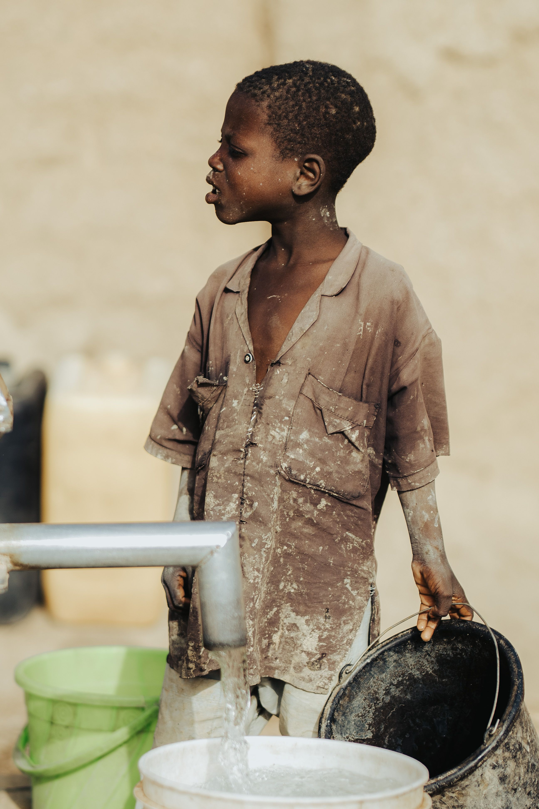

SOCIEDAD
¿Vale la pena ser reemplazados por la IA?

Vivimos en una época en la que la tecnología avanza a una velocidad difícil de comprender. Cada año aparecen herramientas capaces de hacer cosas que hace poco parecían imposibles. Inteligencias artificiales que escriben, programan, diseñan y realizan en segundos tareas que antes necesitaban horas de trabajo humano.
Y aunque resulta fascinante pensar en todo lo que podríamos lograr, hay una pregunta que no deja de incomodarme.
¿Realmente estamos avanzando como sociedad o simplemente estamos encontrando nuevas maneras de producir más gastando menos?
No estoy en contra de la inteligencia artificial. Sería absurdo negar sus posibilidades. Podría ayudarnos a reducir jornadas laborales, realizar trabajos peligrosos, mejorar la medicina y permitir que las personas tengan más tiempo para vivir.
Pero hay algo que me preocupa mucho más que la tecnología misma: las manos en las que estamos dejando su futuro.
Porque mientras hablamos de máquinas inteligentes y de un mundo automatizado, millones de personas siguen trabajando en condiciones que deberían haber desaparecido hace décadas.
Hay trabajadores que pasan prácticamente todo el día fuera de casa y aun así no ganan lo suficiente para vivir tranquilamente. Personas que no tienen vacaciones pagadas, seguridad social ni prestaciones laborales. Familias que dependen de empleos informales donde enfermarse puede significar quedarse sin ingresos.
Y mientras tanto, escuchamos que el futuro será maravilloso porque las empresas podrán hacer el mismo trabajo con menos empleados.
¿Maravilloso para quién?
A veces parece que nos preocupa más construir máquinas capaces de trabajar como humanos que garantizar que los humanos puedan trabajar dignamente.
Y lo más triste es que ni siquiera necesitamos imaginar un futuro distópico para encontrar ejemplos de esto.
Pensemos en algo tan cotidiano como una barra de chocolate.
Para muchas personas es simplemente un producto que compran en una tienda. Algo barato, dulce y completamente normal. Sin embargo, detrás del cacao con el que se fabrica existe una realidad que rara vez vemos.
En Ghana y Costa de Marfil, dos de los principales productores de cacao del mundo, el trabajo infantil continúa siendo un problema enorme. Un estudio publicado en 2020, basado en datos de 2018 y 2019, estimó que alrededor de 1.56 millones de niños participaban en trabajo infantil relacionado con la producción de cacao en las zonas estudiadas.
No estamos hablando solamente de niños ayudando ocasionalmente a sus familias. Muchos realizan actividades peligrosas, utilizan herramientas que pueden lastimarlos y trabajan en condiciones que ponen en riesgo su salud y su educación.
Mientras un niño trabaja en una plantación, en otro lugar del mundo alguien disfruta el producto terminado sin conocer su historia.
Y no lo digo para culpar a quien compra chocolate. Lo digo porque es difícil comprender cómo hemos construido cadenas de producción tan grandes que podemos disfrutar de sus beneficios sin tener que mirar directamente el sufrimiento que existe detrás.
El cacao se cultiva en África occidental, pero una parte importante del valor que genera la industria del chocolate se concentra en otras etapas de la cadena, como la fabricación, la comercialización y la venta de productos terminados. Muchas familias productoras reciben una parte pequeña del valor final.
Quienes realizan algunos de los trabajos más difíciles no necesariamente son quienes más se benefician de ellos.
Es una contradicción que debería hacernos pensar.
Tenemos la capacidad tecnológica para desarrollar sistemas cada vez más complejos, pero todavía no hemos logrado garantizar que millones de trabajadores reciban condiciones justas.
Entonces, si una empresa puede obtener enormes beneficios manteniendo bajos sus costos laborales, ¿qué incentivo tiene para cambiar voluntariamente ese modelo?
¿Por qué invertiría más en salarios, seguridad y bienestar si puede seguir obteniendo ganancias sin hacerlo?
Y aquí es donde la inteligencia artificial empieza a preocuparme.
No porque las máquinas sean malas, ni porque sustituir ciertas tareas humanas sea necesariamente algo negativo. Hay trabajos peligrosos, repetitivos y agotadores que sería maravilloso dejar de realizar.
El problema es que eliminar un trabajo no significa automáticamente mejorar la vida de quien lo hacía.
Imagina a una persona que lleva quince años trabajando para mantener a su familia. Quizás no le gusta demasiado su empleo, quizás llega cansada todos los días y apenas tiene tiempo para convivir con sus hijos.
Un día descubre que la empresa implementará un sistema de inteligencia artificial capaz de realizar gran parte de sus tareas.
Para la empresa puede representar una reducción de gastos y un aumento de productividad.
Para esa persona podría significar perder el ingreso del que depende toda su familia.
Y entonces vemos dos formas completamente diferentes de entender el mismo avance.
Una habla de eficiencia, innovación y crecimiento. La otra habla de incertidumbre, miedo y de no saber qué hacer mañana.
Es importante aclarar que no todos los empleos desaparecerán. La Organización Internacional del Trabajo ha señalado que la inteligencia artificial generativa probablemente transformará muchos trabajos en lugar de reemplazarlos por completo.
Pero incluso si la mayoría de las personas conserva su empleo, eso no responde una pregunta fundamental.
¿Quién se quedará con los beneficios de esa transformación?
Si una herramienta permite que una persona produzca en cuatro horas lo que antes producía en ocho, podríamos aprovecharlo para reducir su jornada sin disminuir sus ingresos.
Podríamos darle más tiempo para descansar, estudiar, convivir con su familia o simplemente hacer cosas que disfruta.
Pero también existe otra posibilidad: exigirle que produzca el doble durante las mismas ocho horas, reducir personal y aumentar las ganancias.
La tecnología permite ambas cosas. La decisión no la toma una máquina.
Y si observamos las desigualdades laborales que ya existen, resulta difícil confiar ciegamente en que los beneficios se repartirán de manera justa.
Tampoco podemos ignorar la desigualdad de poder. Una persona que pierde su empleo puede pasar meses buscando cómo pagar sus cuentas, mientras que una gran empresa dispone de recursos, asesores y oportunidades que esa persona difícilmente tendrá.
Las empresas pueden enfrentar sanciones y existen leyes que buscan proteger a los trabajadores, pero tener derechos escritos no siempre significa poder ejercerlos. En muchos lugares, exigir condiciones justas puede implicar arriesgar el único ingreso disponible.
A veces hablamos de cambiar de trabajo como si todo el mundo tuviera esa libertad.
Como si una madre pudiera abandonar su empleo sin pensar en la comida de sus hijos. Como si una persona endeudada pudiera rechazar un salario miserable simplemente porque sabe que merece algo mejor.
No todas las personas pueden darse el lujo de elegir.
Y quizás eso es lo que más me entristece de toda esta discusión.
Nos emociona imaginar ciudades inteligentes, robots y sistemas capaces de realizar cualquier tarea. Pensamos en un futuro donde las máquinas harán todo el trabajo por nosotros.
Pero muy pocas veces nos detenemos a pensar en quienes ni siquiera pueden disfrutar de las condiciones básicas del presente.
¿De qué sirve hablar de una nueva revolución tecnológica si todavía hay niños trabajando en plantaciones, adultos envejeciendo en empleos agotadores y familias que viven con miedo de perder su única fuente de ingresos?
No creo que debamos detener el desarrollo de la inteligencia artificial. La tecnología también puede ser una herramienta para mejorar nuestras vidas y sería injusto ignorar todo lo positivo que podría traer.
Pero tampoco deberíamos confundir el avance tecnológico con el progreso humano.
Una sociedad no necesariamente mejora porque sus empresas produzcan más, sus máquinas sean más inteligentes o sus productos sean más baratos.
También debería importar cuánto descansan sus trabajadores, cuánta seguridad tienen sus familias y cuántas personas pueden vivir sin sentir que cualquier imprevisto económico podría destruir todo lo que han construido.
Y cuando hablamos del trabajo infantil, de la explotación o de las malas condiciones laborales, no deberíamos tratar estos problemas como sacrificios inevitables para mantener funcionando la economía.
Si un sistema depende de que algunas personas vivan mal para que otras puedan obtener mayores beneficios, entonces vale la pena cuestionar cómo está organizado.
Quizás algún día la inteligencia artificial consiga liberarnos de muchos trabajos que nadie desea realizar. Quizás nos permita vivir con más tranquilidad y dedicar nuestro tiempo a cosas que realmente nos importan.
Me gustaría creer que ese futuro es posible.
Pero también me preocupa que terminemos construyendo un mundo donde las máquinas hagan cada vez más cosas y las personas tengan cada vez menos control sobre sus propias vidas.
Porque al final, la pregunta no debería ser solamente si una inteligencia artificial puede reemplazarnos.
Deberíamos preguntarnos por qué hemos aceptado tan fácilmente que el valor de una persona dependa de qué tan rentable resulta mantenerla.
Y sobre todo, si el futuro que estamos construyendo realmente está pensado para mejorar nuestras vidas o solamente para aumentar las ganancias de quienes ya tienen más que suficiente.